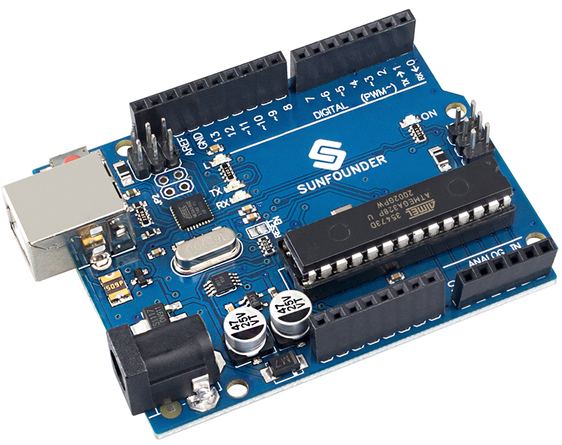
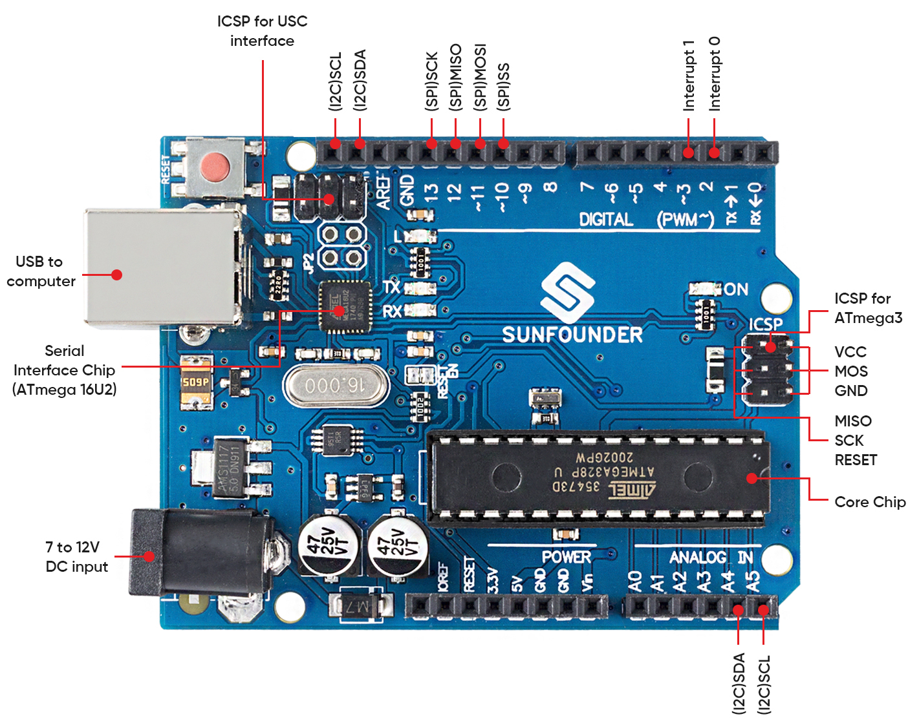

Note
Hello, welcome to the SunFounder Raspberry Pi & Arduino & ESP32 Enthusiasts Community on Facebook! Dive deeper into Raspberry Pi, Arduino, and ESP32 with fellow enthusiasts.
Why Join?
Expert Support: Solve post-sale issues and technical challenges with help from our community and team.
Learn & Share: Exchange tips and tutorials to enhance your skills.
Exclusive Previews: Get early access to new product announcements and sneak peeks.
Special Discounts: Enjoy exclusive discounts on our newest products.
Festive Promotions and Giveaways: Take part in giveaways and holiday promotions.
👉 Ready to explore and create with us? Click [here] and join today!
SunFounder R3 Board
{kind=link}

Note
The SunFounder R3 board is a mainboard with almost the same functions as the Arduino Uno, and the two boards can be used interchangeably.
SunFounder R3 board is a microcontroller board based on the ATmega328P (datasheet). It has 14 digital input/output pins (of which 6 can be used as PWM outputs), 6 analog inputs, a 16 MHz ceramic resonator (CSTCE16M0V53-R0), a USB connection, a power jack, an ICSP header and a reset button. It contains everything needed to support the microcontroller; simply connect it to a computer with a USB cable or power it with a AC-to-DC adapter or battery to get started.
Technical Parameters

MICROCONTROLLER: ATmega328P
OPERATING VOLTAGE: 5V
INPUT VOLTAGE (RECOMMENDED): 7-12V
INPUT VOLTAGE (LIMIT): 6-20V
DIGITAL I/O PINS: 14 (0-13, of which 6 provide PWM output(3, 5, 6, 9-11))
PWM DIGITAL I/O PINS: 6 (3, 5, 6, 9-11)
ANALOG INPUT PINS: 6 (A0-A5)
DC CURRENT PER I/O PIN: 20 mA
DC CURRENT FOR 3.3V PIN: 50 mA
FLASH MEMORY: 32 KB (ATmega328P) of which 0.5 KB used by bootloader
SRAM: 2 KB (ATmega328P)
EEPROM: 1 KB (ATmega328P)
CLOCK SPEED: 16 MHz
LED_BUILTIN: 13
LENGTH: 68.6 mm
WIDTH: 53.4 mm
WEIGHT: 25 g
I2C Port: A4(SDA), A5(SCL)
What’s More